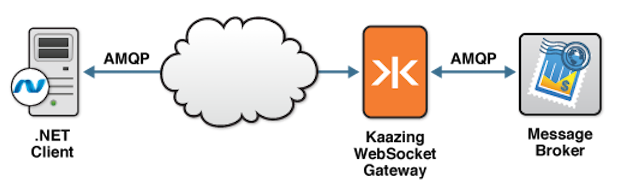

Checklist: Build Microsoft .NET AMQP Clients
This checklist provides the steps necessary to use the signed Kaazing Gateway AMQP client libraries for Microsoft .NET to enable your .NET Framework application to communicate with any AMQP broker:
| # | Step | Topic or Reference |
|---|---|---|
| 1 | Learn about supported browsers, operating systems, and platform versions. | Release Notes |
| 2 | Learn about the Kaazing Gateway AMQP client. | Overview of the Kaazing .NET AMQP Client Libraries |
| 3 | Learn how to use the Kaazing AMQP Client Library and the supported APIs. | Use the Kaazing .NET AMQP Client Library |
| 4 | Learn how to authenticate your client by implementing a challenge handler to respond to authentication challenges from the Gateway. | Secure Your .NET AMQP Client |
Overview of AMQP 0-9-1
Advanced Message Queuing Protocol (AMQP) is an open standard for messaging middleware that was originally designed by the financial services industry to provide an interoperable protocol for managing the flow of enterprise messages. To guarantee messaging interoperability, AMQP 0-9-1 defines both a wire-level protocol and a model—the AMQP Model—of messaging capabilities.
The AMQP Model defines three main components:
- Exchange: clients publish messages to an exchange
- Queue: clients read messages from a queue
- Binding: a mapping from an exchange to a queue
For more information about AMQP, visit http://www.amqp.org.
Overview of Microsoft .NET Framework
Microsoft .NET Framework (.NET) provides a common language runtime, base libraries, and development technologies to build applications for Microsoft Windows desktop, mobile and server platforms.
For more information about the .NET Framework, visit http://www.microsoft.com/NET/.
WebSocket and AMQP
WebSocket enables direct communication from the browser to an AMQP broker. Kaazing Gateway radically simplifies Web application design by providing the AMQP client libraries for the Java, JavaScript, Adobe Flex, .NET client technologies. Web developers can code directly against the back-end AMQP broker without the need for custom Servlets or server-side programming.
Using the AMQP client libraries, you can take advantage of the AMQP features, making the browser a first-class citizen in AMQP systems (similar to C, Java, Python, and other clients). This means that you can run AMQP clients directly in a browser.
The AMQP libraries use the Kaazing Gateway ByteSocket client library because AMQP messages use a binary format. The implementation is layered on top of ByteSocket, which uses WebSocket (and thus the entire stack of Kaazing Gateway HTML5 Communications client libraries). As such, applications developed using the AMQP libraries are provided with guaranteed persistence, reliability, and message-receipt acknowledgment all the way to the browser.
Overview of the Kaazing Gateway .NET AMQP Client Libraries
The Kaazing JavaScript AMQP client libraries, which allow clients to subscribe from and publish messages to a message broker using AMQP. With the Kaazing Gateway AMQP client libraries, you can leverage WebSocket in your application. This WebSocket client then enables communication over AMQP between your application and the message broker, as shown in the following figure:

Starting an AMQP Broker
There are a wide variety of AMQP brokers available that implement different AMQP versions. For example, RabbitMQ, Apache Qpid, OpenAMQ, Red Hat Enterprise MRG, ØMQ, and Zyre. If you do not have an AMQP broker installed yet, you can use the Apache Qpid AMQP broker included in the Gateway download package, that supports AMQP version 0-9-1.
To set up and start the Apache Qpid broker on your system, perform the steps described in Setting Up the Gateway and Clients.
Note: The AMQP client libraries are compatible with AMQP version 0-9-1. Refer your AMQP broker documentation for information about certified AMQP versions.
For information on integrating with RabbitMQ, see Integrate RabbitMQ Messaging.